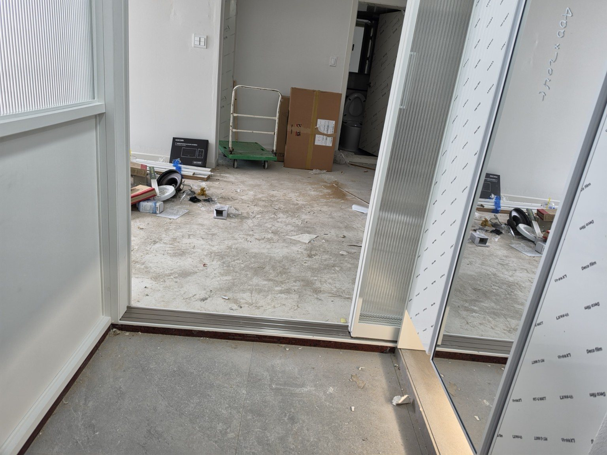
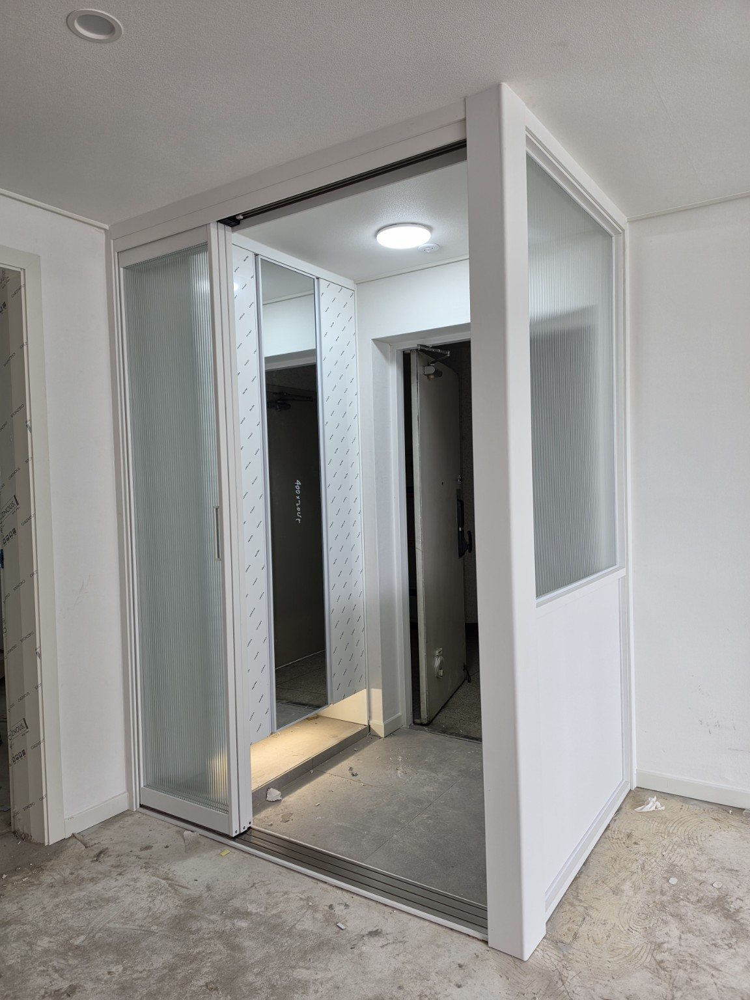
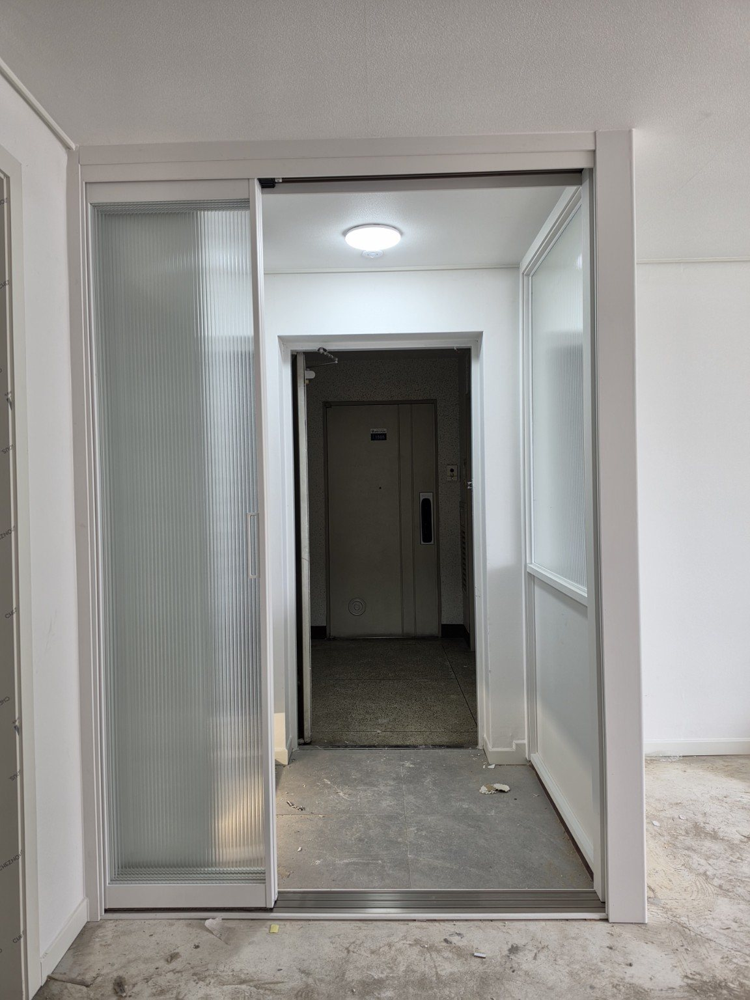
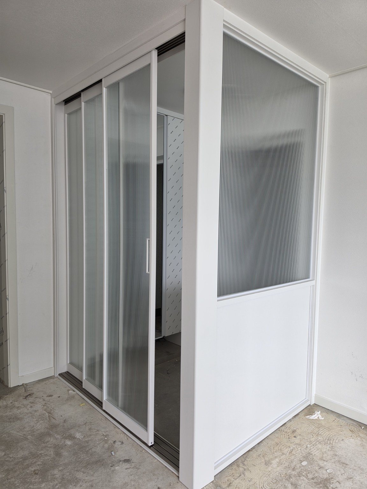
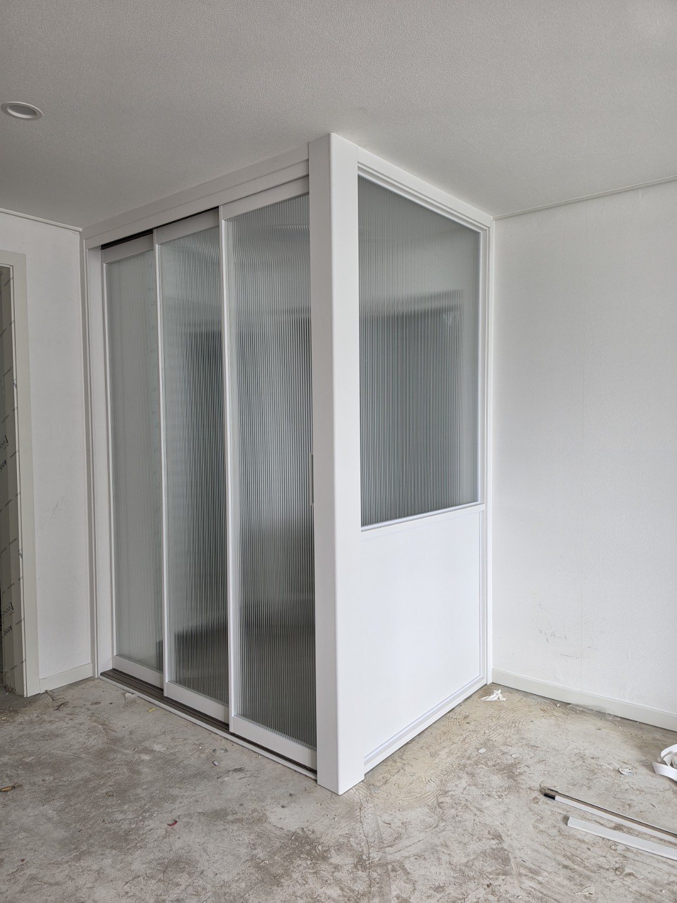
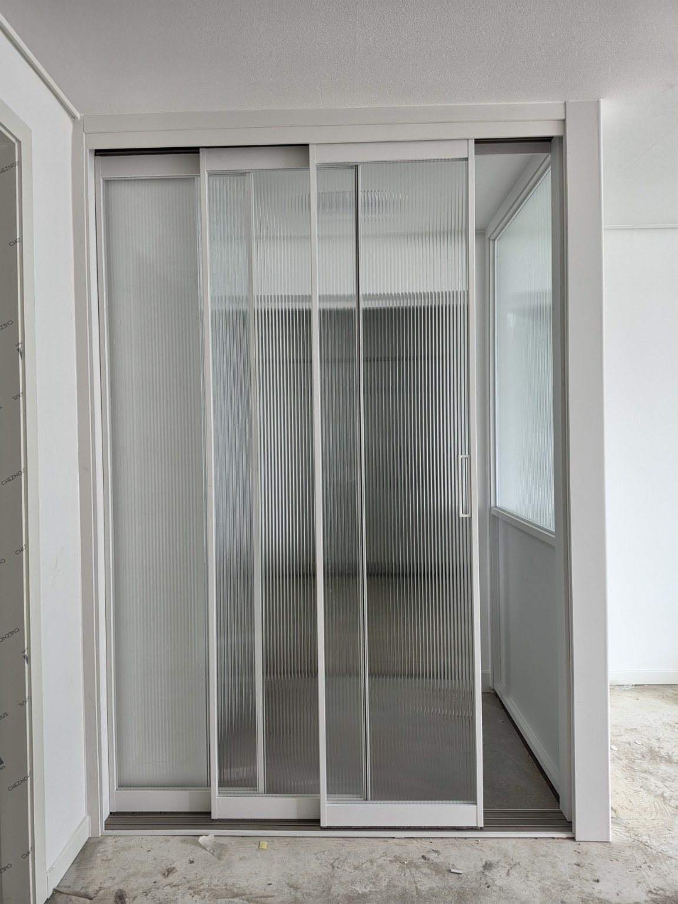
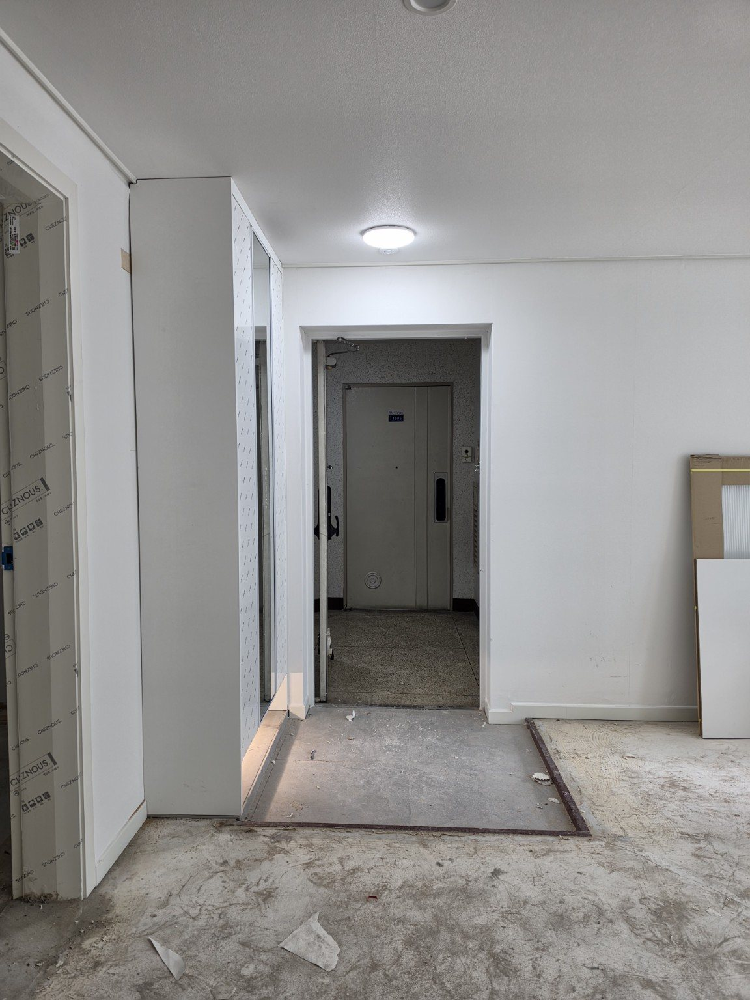
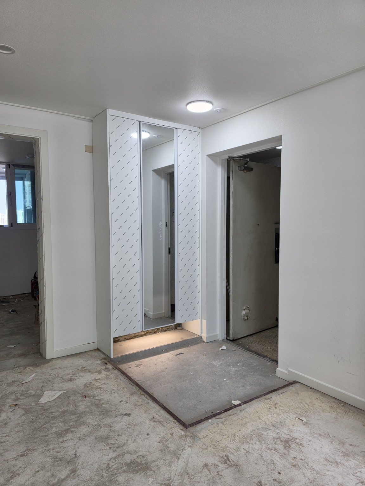
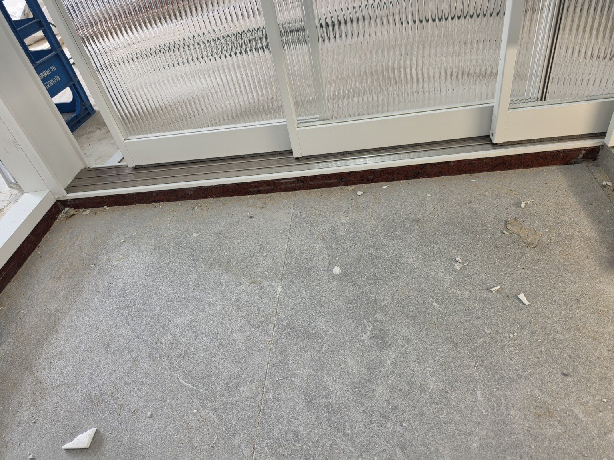

홈 › 안양 현관중문 시공사례
안양 호계동 일신건영 101동 33평
영림 170번 ㄱ자 3연동 현관중문
안양시 호계동 일신건영 101동 33평 현관에 ㄱ자형 3연동 중문을 시공한 사례입니다. 화이트 계열의 영림 170번 색상과 세로결이 돋보이는 강화 모루유리를 적용했습니다.
현장 : 안양시 호계동 일신건영 101동 33평
중문 형태 : ㄱ자형 3연동 현관중문
색상 : 영림 170번
유리 : 강화 모루유리
구성 특징 : 3연동 중문 + 측면 파티션
중문 형태 : ㄱ자형 3연동 현관중문
색상 : 영림 170번
유리 : 강화 모루유리
구성 특징 : 3연동 중문 + 측면 파티션
현관 구조에 맞춘 ㄱ자형 구성
사진에서 보이는 것처럼 현관 출입구 옆 공간까지 이어지는 구조여서 정면의 3연동 중문과 측면 파티션을 ㄱ자 형태로 연결했습니다. 현관과 실내의 경계를 자연스럽게 만들면서 출입에 필요한 개방 폭을 확보하도록 구성한 현장입니다.
영림 170번 색상은 밝은 실내 벽면과 자연스럽게 이어지도록 적용했고, 강화 모루유리는 세로 패턴을 통해 빛은 받아들이면서 반대편 모습은 부드럽게 가려주는 디자인 요소가 됩니다.
시공 사진










자주 묻는 질문
어떤 중문을 시공했나요?
영림 170번 색상의 ㄱ자형 3연동 현관중문을 시공했습니다.
ㄱ자형 중문은 어떤 공간에 활용하나요?
현관 구조가 일자로만 구획하기 어려울 때 정면 중문과 측면 파티션을 연결하는 방식으로 활용할 수 있습니다. 실제 구성은 현장 치수와 구조에 맞춰 결정합니다.
유리는 무엇을 사용했나요?
세로 무늬가 있는 강화 모루유리를 적용했습니다.
3연동 중문의 특징은 무엇인가요?
여러 문짝이 연동되어 미끄러지듯 열리고 닫히는 방식으로, 현관 구조와 출입 동선을 고려해 구성할 수 있습니다.
안양 아파트도 맞춤 제작이 가능한가요?
현장 구조와 개구부 형태를 확인해 중문과 파티션 구성을 맞춤 제작·시공합니다.